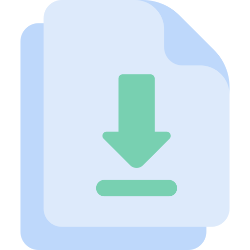

Biblioteca Digital
En esta sección encontrarás todos los apuntes, libros y textos que usarás a lo largo del año. No olvides prestar atención en clases y actualizar siempre tus apuntes, descargarlos y ponerte al día
Catequesis de bautismo
La catequesis de bautismo es una pequeña sección dedicada principalmente a aquellos que quieran aprender un poco más del bautismo, ya sea porque estan próximos a recibir el sacramento o por curiosidad. Este material fue elaborado con el esfuerzo y trabajo en equipo de todos los catequistas de la comunidad, en conjuto con la persona que esta encargada de dar la charla.

Descargar Bautismo
Catequesis Del Buen Pastor
La catequesis del Buen Pastor, es una catequesis dedicada a los más chiquitos, es una continuación del camino que podemos realizar y acompañar en casa cada uno con los más peques. Este material se especifíca para ese tiempo de edad que comprende entre el bautismo y la catequesis de Primero de Comunión. Es un material simple y alegre que podes compartir en familia.
Descargar Catequesis del Buen Pastor
Catequesis de Comunión 1
¡Esto es Primer Año de Comunión! Que alegría que hayas confiado en nosotros para asistir a la catequesis familiar. Esperamos que todo el contenido que encuentres en la página sea claro. Ante cualquier duda o inconveniente que tengas recorda siempre, pero SIEMPRE, recurrir a tu catequista. Durante este año conoceran juntos a Jesús y a la Virgen María
Descargar Primero de Comunión